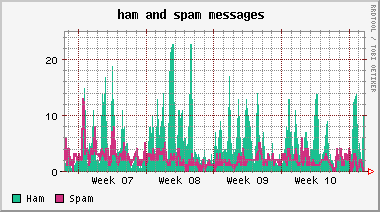
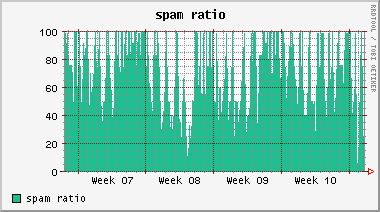
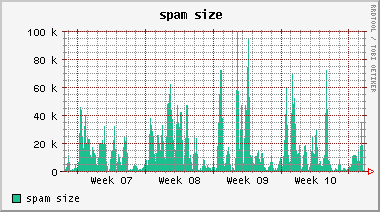

clapf promotion blurb
What is clapf?
Clapf is an open-source spam filter application published under the
zlib/png license.
It is designed to be fast, simple and easy to use.
It talks via the SMTP protocol with postfix (or any other MTA capable for this kind of communication)
and can use libclamav, AVG Linux,
avast!, Kaspersky or
Dr.Web to prevent virus infected emails
getting in your network.
Features
network based operation Bayesian-like (inverse chi-square) statistic filter 99% (or even better) accuracy very little false positives rate never rejects an email unless it's virus infected character set recognition simple and easy to use database training blackhole feature URI blacklist support utf8, base64 and quoted-printable decoder limit the size of messages to be filtered low total cost of ownership (TCO)
How it works
Configure your MTA to forward each incoming message to clapf. The filter checks whether it contains a virus. If it does clapf rejects the message with "550 Access denied. (virusname)" and it's over.
If the message looks cleans and you have compiled antispam support and enabled this feature in the configuration file (this is the default) clapf runs a Bayesian test on the textual part(s) of the email.
Clapf reads the token probabilities from a CDB file. It creates token pairs as well as single tokens from URLs. Then clapf selects the most interesting tokens and calculates an overall spamicity value. If this value is above a certain (configurable) threshold it marks the message as spam.
The filter never rejects a message even if it is spam unless it is virus infected. Of course you have the freedom to modify the source code and achieve this behaviour but I don't recommend it.
Clapf inserts some special header fields (of course its name is configurable) to the email containing the message identifier clapf has generated, the spam probability and if the message is considered spam clapf also put a fixed string into the header for the easy spam recognition in procmail, maildrop, ...
Then it sends the message back to postfix let it deliver the letter to the user's mailbox.
The filter syslogs a few parameters about the message for statistics: the message identifier, the spamicity value, message length and the time took to handle the message.
Database training
Every statitical (eg. Bayesian) filter must be trained. Clapf uses the CDB format to read token probabilities from. Unfortunately this format is constant ie. read only, but when the filter makes a mistake it should be trained. The administrator may recreate the CDB file from scratch or put the tokens into a MySQL database then let the users train it via a very simple form and let a cron job refresh the CDB file if necessary.
Blackhole feature
This feature is able to make the filter even better especially if you have a lot of email addresses. Create a trap email address what you advertise in web pages, news groups, irc channels, etc. Chances are that spammers will find it and send their bulk messages to this address.
You may create eg. a maildrop rule to run a special script (included in the source distribution) which extracts the address of the computer connecting to you then put this IP-address into a (currently MySQL) database. If you compiled and activated the blackhole feature every incoming message is searched for the trapped IP-addresses. If one of them is found the analysed message is obviously spam and can be marked without further investigation.
This is actually a kind of (automatic) black list. It can work without human interaction: a cron job can purge aged entries from the database lowering the TCO.
URI blacklist
This feature checks every URI in the message against a (public or private) DNS blacklist. If an URI.rbldomain host can be resolved chances are that the whole message is spam. For minimising false positives clapf creates a special single session token added to the token list increasing the spam probability of the message.
Other smart features
A typical spam is only a few kB in size. To save processing resources clapf can be configured to pass messages above a certain configurable limit without antispam check.
If you are getting a lot of Asian, ... spam in an undisplayable language just fill a customisable array and let clapf counts these characters in each incoming message. If their number exceeds a certain limit the filter can mark the message as spam.
The numbers
No blurb is complete without the impressive numbers. I did a 2 week long test and got 1245 messages. Clapf caught 630 of 633 spam (99.52%) with no false positives (612 of 612 ham = 100%). The overall accuracy is 99.75% (1242 of 1245). After your token database is created you may achieve this level of accuracy or even better.
Clapf is able to handle my average size (<10 kB) messages within 20-30 msec (without the blackhole feature).
Statistics
 

Future
Per user token database association is planned with MySQL or LDAP.